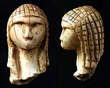

L'histoire de la France commence avec les premières occupations humaines du territoire correspondant au pays actuel. Aux groupes présents depuis le Paléolithique et le Néolithique, sont venues s'ajouter, à l'Âge du bronze et à l'Âge du fer, des vagues successives de Celtes, puis au IIIe siècle de peuples germains (Francs, Wisigoths, Alamans, Burgondes) et au IXe siècle de scandinaves appelés Normands.

Le nom de la France est issu d'un peuple germanique, les Francs. Clovis (466-511), roi des Francs saliens, scelle par son baptême à Reims
l'alliance de la royauté franque avec l'Église catholique. Il unit les tribus franques salienne et ripuaire et conquiert un ensemble
de territoires en Gaule et en Germanie qui sont agrandis par ses descendants mérovingiens, puis par la deuxième dynastie franque des
Carolingiens fondée en 751. Charlemagne en particulier conquiert la Basse-Saxe dans le Nord de l'Allemagne, le royaume lombard en Italie
et constitue une marche à l'est qui deviendra l'Autriche.
L'Empire carolingien est finalement partagé en 843 entre ses petits-fils par le traité de Verdun qui sépare la Francie occidentale
de la Francie orientale, qui deviendra le royaume de Germanie. La troisième dynastie franque, celle des Capétiens, s'impose définitivement
en Francie occidentale à partir de 987. Philippe Auguste et ses successeurs donnent une nouvelle impulsion à l'unification territoriale du
royaume de France et repoussent les frontières orientales du Rhône sur les Alpes et de la Saône sur le Rhin, à partir de l'achat
du Dauphiné (1349) jusqu'à l'annexion de l'Alsace (1648-1681).
Le nom de France n'est employé de façon officielle qu'à partir de 1190 environ, quand la chancellerie du roi Philippe Auguste commence à employer le terme de rex Franciæ (roi de France)1 à la place de rex Francorum (roi des Francs) pour désigner le souverain. Le mot était déjà couramment employé pour désigner un territoire plus ou moins bien défini, comme on le voit à la lecture de la Chanson de Roland, écrite un siècle plus tôt. Dès juin 1205, le territoire est désigné dans les chartes sous le nom de regnum Franciæ, c'est-à-dire royaume de France en latin2,3. On ne peut ainsi parler d'histoire de France, au sens propre, et de conscience nationale française qu'à partir du XIIe siècle4.

La Restauration (1814-1830) et la monarchie de juillet (1830-1848)
Les Bourbons reviennent au pouvoir lors d'une période appelée Restauration qui débute le 6 avril 1814. Le 24 avril 1814, Louis XVIII débarque à Calais. Le 4 juin 1814, il accorde une charte par laquelle il consent volontairement à limiter son pouvoir. Il affirme par là même la souveraineté de droit divin du monarque. De ce fait, la charte de 1814 accorde un pouvoir important au roi, personnalité « inviolable et sacrée »55. L'initiative des lois lui est réservée, mais celles-ci sont votées par le Parlement composé de deux chambres : la Chambre des pairs dont les membres sont nommés à vie par le roi et dont le nombre est illimité ; la Chambre des députés lesquels sont élus pour cinq ans au suffrage censitaire. Les députés parviennent à obliger les ministres à venir justifier leur politique devant eux, et à répondre à leurs questions.
La restauration est la période allant de la chute du Premier Empire le 6 avril 1814 à la Révolution de 1830.Second Empire (1852-1870)
La restauration est la période allant de la chute du Premier Empire le 6 avril 1814 à la Révolution de 1830.
Deuxième République (1848-1852)

En 1847, l'opposition, alimentée par une vague de mécontentement due à la corruption du régime en place et par la crise économique, organise dans tout le pays des banquets pour demander l'élargissement du corps électoral. La liberté de réunion n'existant pas, la présence à ces banquets républicains permet aux opposants au régime de se réunir sans enfreindre la loi. Le 22 février 1848, le pouvoir interdit la tenue d'un banquet. Ceci entraîne des manifestations qui se poursuivent le lendemain. C'est alors que la troupe tire sur les manifestants. Quand la nouvelle de cette fusillade est connue, tout le Paris populaire s'embrase. Le roi abdique le lendemain car il ne veut pas être responsable d'un massacre de la foule parisienne. Les insurgés ont retenu la leçon de 1830. Ils exigent que des républicains siègent dans le gouvernement provisoire. Celui-ci proclame la République le soir même. La deuxième République commence.
La Troisième République de 1870 à 1940
La Troisième République, ou IIIe République, est le régime républicain en vigueur en France de septembre 1870 à juillet 1940 , soit pendant presque 70 ans, le premier à s'imposer en France dans la durée depuis 1789
. ...
C'est ce que Vincent Duclert qualifie de « naissance de l'idée de la France comme nation politique ».